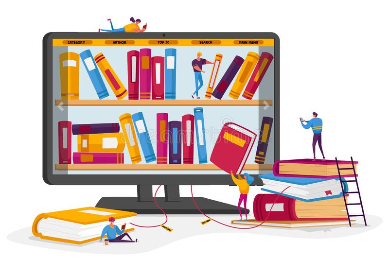

About Us
In the aftermath of the exacerbated COVID-19 pandemic in countries including India, Nepal, Sri Lanka and Bangladesh, and as a new wave of the virus threatens the African continent, a worsening learning crisis that affected 1.6 billion children in 2020 is permanently disrupting the educations of children and heightening risks to young girls. Room to Read’s work is needed now more than ever, as UNICEF reports one-third of the world’s children remain cut off from education due to inaccessibility to remote learning methods and 10 million additional girls are at risk of child marriage over the next decade. The World Bank is calling the COVID-19 pandemic “the worst crisis to education and learning in a century. Copy with Callout - Education Resilience As an organization dedicated to education, we are doing everything we can to ensure that learning continues amid this surge. Our 600+ staff on the ground in India are reaching out to children and their families as they cope with COVID-19 suffering and losses, to provide both crucial safety information and educational resources. The remote learning methods we developed last year are proving incredibly valuable as the crisis Resources such as our at-home literacy kit, parent handbook, read-aloud videos, radio and TV programming, and interactive voice response storytelling are helping us to enable children to continue their literacy journeys at home. Our social mobilizers are conducting active outreach to adolescent girls to help them use their life skills to navigate this escalating crisis. Qualities like communication, perseverance and resilience are vital, and our teams are deeply engaged in reinforcing these traits that can provide girls and their families with much-needed equilibrium and stability during this turbulent period.